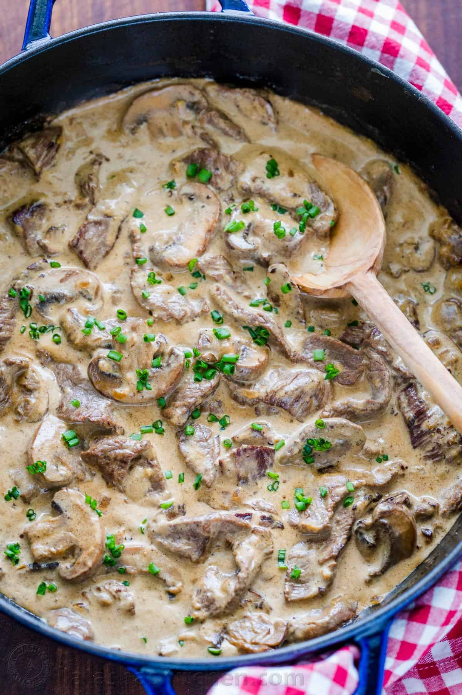

Beef Stroganoff: The Best Winter Meal

Beef Stroganoff is a classic comfort dish featuring tender
strips of beef, sautéed mushrooms, and onions in a rich,
creamy sauce made with sour cream and paprika. Served
over egg noodles or rice, it's a hearty and flavorful
meal perfect for weeknight dinners or special occasions.
With origins in Russia, this dish has become a global
favorite for its satisfying blend of savory and creamy
textures.
- 1 1/2 lbs beef sirlion or tenderlion, thinly sliced into strips
- 1 mediun onion, finely chopped
- 2 cloves garlic, minced
- 2 cups mushrooms, Sliced(white or cremini work well)
- 1 cup sour cream
- 1 cup beef broth
- 1 tablespoon dijon
- 1 tablespoon Worcestershire sauce
- 2 tablespoons all-purpose flour
- 2 tablespoon butter
- 1 tablespoon olive oil,
- 1 teaspoon paprika
- Salt and Pepper to taste
- Fresh parsley for garnish
- Egg Noodles or Rice for serving
Cooking Steps:
- Thinly slice the beef into strips, about ¼-inch thick.
Season with salt and pepper.
-
Heat 1 tablespoon of olive oil in a large skillet over
medium-high heat. Add the beef in batches to avoid
overcrowding the pan, and cook for about 2 minutes
on each side until browned. Transfer the seared
beef to a plate and set aside.
- In the same skillet, lower the heat to medium,
and add 2 tablespoons of butter. Add the
chopped onions and sauté until softened,
about 4-5 minutes. Stir in the garlic
and cook for another minute until fragrant.
- Add the sliced mushrooms and cook for about 5 minutes,
until they release their juices and become golden brown.
-
Sprinkle 1 tablespoon of flour over the mushroom-onion
mixture and stir to coat. Cook for about 1 minute.
- Slowly pour in the beef broth while stirring continuously
to prevent lumps. Add Worcestershire sauce and
Dijon mustard. Bring the mixture to a simmer and let it
cook for 5 minutes, allowing the sauce to thicken slightly.
- Remove the skillet from the heat and stir in the sour cream
until well combined. If the sauce is too thick, you can add a
little more beef broth to reach your desired consistency.
- Return the seared beef (and any accumulated juices)
to the skillet, stirring to coat the beef in the sauce.
Simmer on low heat for 2-3 minutes, just until the beef
is heated through. Be careful not to overcook the beef,
or it may become tough.
-
Serve the beef stroganoff over egg noodles or rice.
Garnish with freshly chopped parsley, if desired.